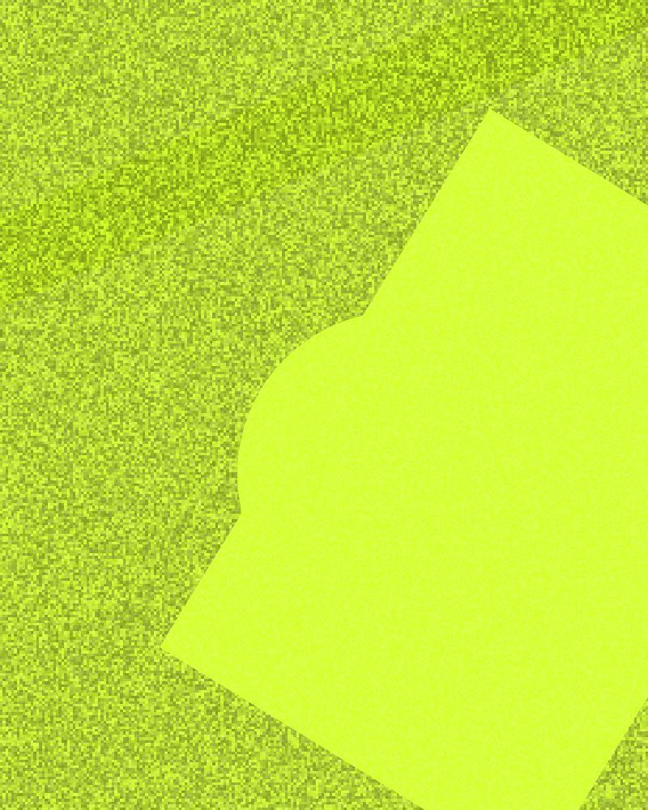

Giorno 270

Modello agricolo degli anni '90, l'era dell'eroina chic
ho letto "Modello"; "modello" per me gira a vuoto; mi sta vicino a accesso, massima, linea; ricerca "forma" (esplorare): Che forma ha forma?; sferzata: quasi niente, un segno nell'angolo
Oggi: modello. Ho letto "Modello"; "modello" per me gira a vuoto; mi sta vicino a accesso, massima, linea; ricerca "forma" (esplorare): Che forma ha forma?; sferzata: quasi niente, un segno nell'angolo.
Da Wikipedia: «modello».
Ho sporcato di grana (2 volte), tagliato (3 volte), flusso, tolto un livello. Ho annullato 4 gesti dopo averli guardati.
COOPERAZIONE È MODELLO. PERBENISMO È COOPERAZIONE. MODELLO È MODA.
Ha retto: Parla soprattutto per superfici: una lingua sola, chiara.
È caduto: La mano si ripete: taglia ancora una volta.
come ne ho discusso con me stesso — la tengo
formale (pro, 1.46): Il baricentro sta su un terzo: la composizione respira. — regge
formale (pro, 1.22): Fuori centro quanto basta: c'è una forza che tira. — regge
occhio (pro, 1.50): Parla soprattutto per superfici: una lingua sola, chiara. — regge
occhio (pro, 1.00): Le diagonali (52%) mettono tutto in caduta. — regge
occhio (pro, 1.25): Il vuoto (34%) lavora quanto il pieno. — regge
memoria (contro, 0.19): La mano si ripete: taglia ancora una volta. — cade
intenzione (pro, 0.73): Viene da: Modello. — regge
formale (pro, 1.22): C'è una struttura: una cosa comanda e attorno c'è spazio. — regge
pubblico (pro, 0.98): Si legge: si capisce cosa sto facendo. — regge
materia (pro, 1.00): Ha una pelle: si sente la materia. — regge